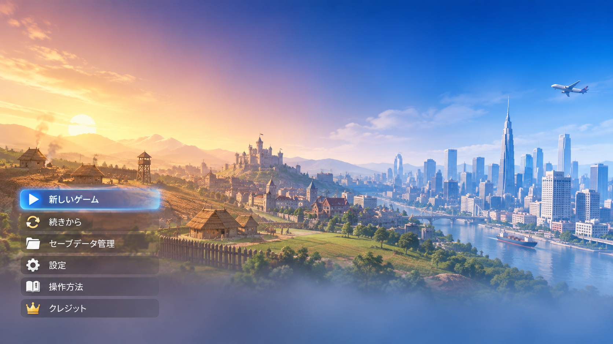

設定した条件で新しい世界を生成します。世界の生成後、人口5人の集落から始まります。
このゲームは音声を使用しません。iPadのタッチ操作に対応しています。
保存データを確認しています。
読み込みは、この世界のシードに対応するバックアップのみ可能です。別の世界のデータは現在読み込めません。
画面をドラッグしてカメラを回転し、2本指で操作して視点を調整します。建設メニューから建物を選び、地面をタップすると配置できます。
住居は人口の上限を増やします。農地・伐採所・採石場などは働き手を必要とし、働き手が足りないと生産量が下がります。住民の食料を確保し、井戸や広場で暮らしやすさを高めながら集落を発展させましょう。
右上の時間ボタンで一時停止・再開ができます。セーブボタンで保存し、タイトル画面の「つづきから」から再開できます。設定・その他からバックアップの書き出しと読み込みも行えます。
文明発展シミュレーション
Three.js を使用したブラウザ向け3Dシミュレーションです。
ゲームの企画・仕様：ユーザー
住民5人の小さな文明が始まります。住居1軒と農地1つがある広大な平坦草原を拠点に、周囲の土地を調べて集落を発展させましょう。
まだ1日も進んでいません。
食料は5日ごと、木材・石材は3日ごとに生産されます。表示は直近の1日分です。生産量は保管上限による制限後の実際の増加量です。
未開拓の大陸
地形生成・文明シミュレーション 0.7.1
世界を生成中...